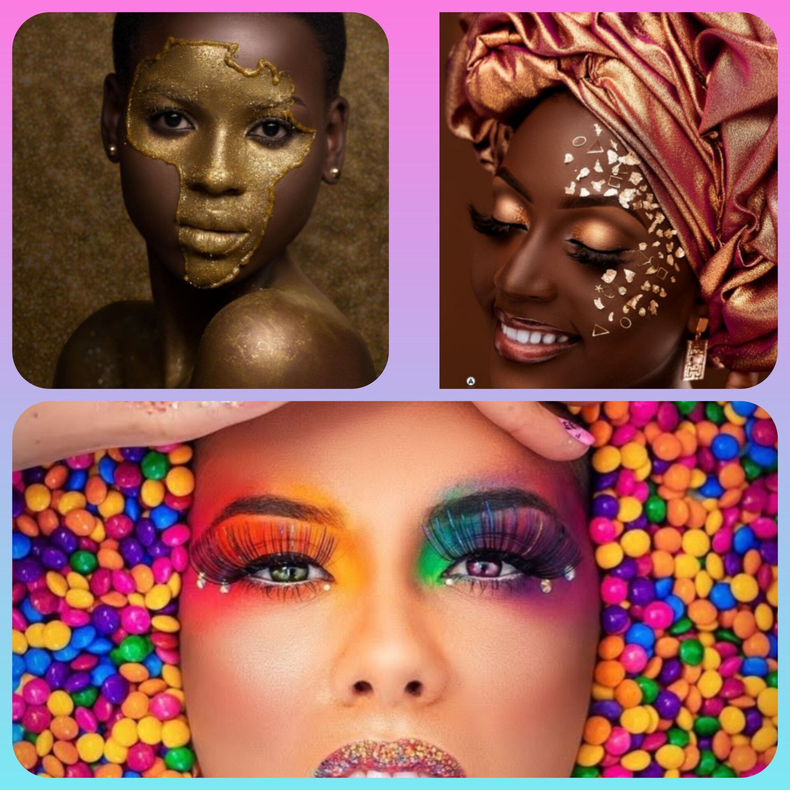

Call me marion tasha iam alover of fashion, iam passionate and innovative fashion with akeen eye for detail and alove for all things stylish,i strive to create unique and compelling fashion statements that resonate with individuals and creativity
My journey in fashion began when i was still a little kid cutting whatever comes my way to fix something for that day
My design philosophy revolves around sustainability,innovation,timless elegancy etc.what i want to acheave is to empower the wearer and pushing fashion boundries
iam always excited to connect with fellow fashion enthusiasts,industry proffesionals and potential collaborators .

A Visionary in Fashion
an innate passion for creativity and an eye for detail, stands at the forefront of the fashion industry, captivating audiences with their distinctive style and innovative designs.
Born from a lifelong fascination with the intersection of art and self-expression, my journey in fashion began as a canvas for personal storytelling. Every stitch, every fabric choice, every silhouette is a reflection of their boundless imagination and relentless pursuit of sartorial excellence.
Driven by a desire to challenge conventional norms and redefine fashion's boundaries, i effortlessly blends elements of tradition with a contemporary flair, producing collections that are both timeless and trendsetting. Their work transcends mere garments; it's an immersive experience, a narrative woven into fabric and thread.
From the runway to the streets, influence is unmistakable, leaving an indelible mark on the industry landscape. With an unwavering commitment to authenticity and craftsmanship, they inspire fellow creators and aficionados alike to embrace individuality and celebrate the artistry of fashion.
As marion tasha continues to push the envelope and shape the future of fashion, their legacy serves as a testament to the transformative power of creativity and the enduring allure of style.
Feel free to adjust and personalize this text to better reflect your own journey and aspirations in the world of fashion!
- croacheting
- hair styles
- art and crafting
- diy
- painting
- funiture making
- manicure and pedicure
a variety we do
basically creativity at its best no matter how hard fake it till you make it
Contact Me
mariontasha10@gmail.com
+25678211833/+2567058856657
uganda Entebbe road